Префектура Тиба · Кодзаки · сакэ
«Тэрада Хонкэ»: сакэварня в Кодзаки, где сакэ варят вместе с микробами и с песней
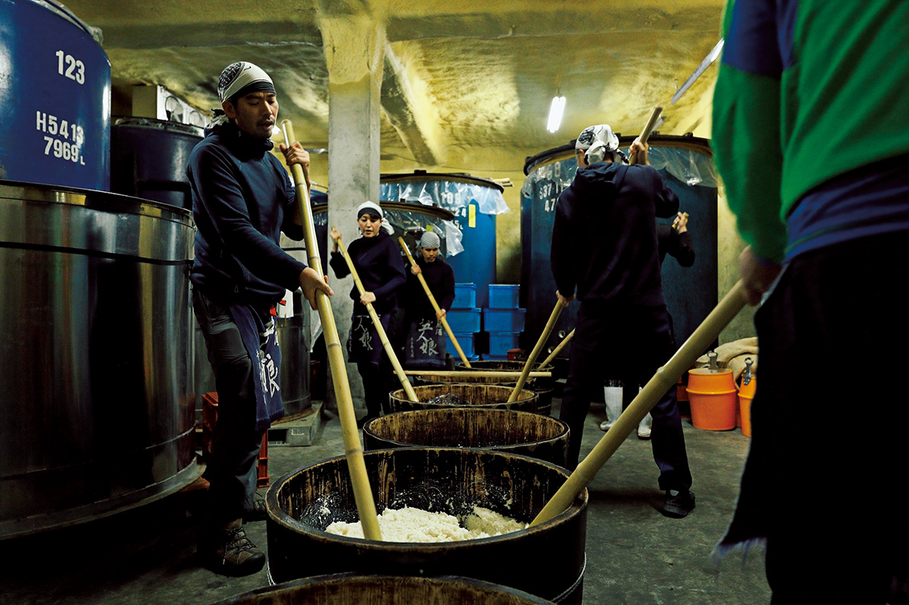
Сакэварне «Тэрада Хонкэ» больше 350 лет, и она одной из первых в Японии стала делать натуральное сакэ. Здесь не добавляют в закваску ни молочнокислых бактерий, ни купленных дрожжей: всю работу делают микробы, которые живут в самой сакэварне.
Закваска
Песня в холодном зале
Половина одиннадцатого утра. В зале держится около 4 градусов, и под потолком разносится протяжная песня с пожеланием долгой жизни и процветания. Пивовары работают парами: шестами длиннее человеческого роста они в одном ритме растирают рис, и слаженный шорох вместе с хорошими голосами задаёт заводной ритм.
Это мотосури, основа старинного метода кимото. В закваску не добавляют молочнокислых бактерий: рис и кодзи растирают вручную в густую кашу. В «Тэрада Хонкэ» при этом поют старую рабочую песню тодзи, мастеров сакэ из края Тамба.
«Если держать воды впритык и сначала оставить закваску почти твёрдой, дрожжи не начинают работать сразу. Тогда микробы удачно сменяют друг друга: сначала бактерии, восстанавливающие нитраты, потом молочнокислые, и только потом дрожжи»
глава сакэварни и тодзи в 24-м поколении
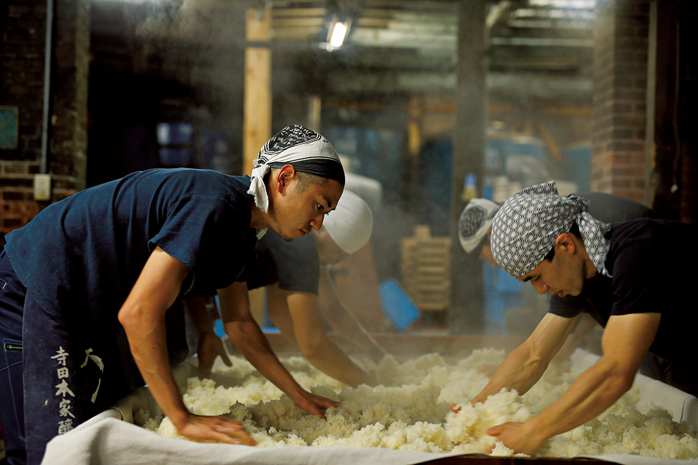
Глава сакэварни Масару Тэрада говорит о работе без прикрас. Мотосури вместе с подготовкой отнимает массу сил, и иногда он сам не понимает, зачем это всё. Петь поначалу было стыдно. Но эта традиция тоже часть сакэ, и если уж работать, то с удовольствием: так, по его словам, и микробам приятнее. Натуральное сакэ, которое ценят и за границей, рождается именно в таком месте, где хорошо микробам.
Рис здесь парят в косики, деревянной пропарочной кадке из японского кедра. Пивовары забираются на старую деревянную подставку, выкапывают горячий рис, грузят его в кадки и бегом несут на плечах дальше, и на эту ловкую работу приятно смотреть.
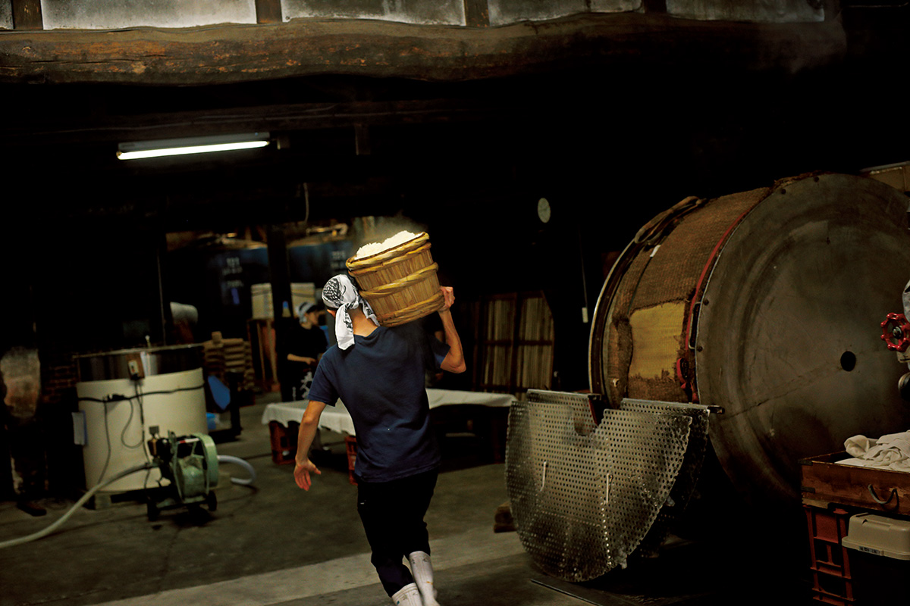
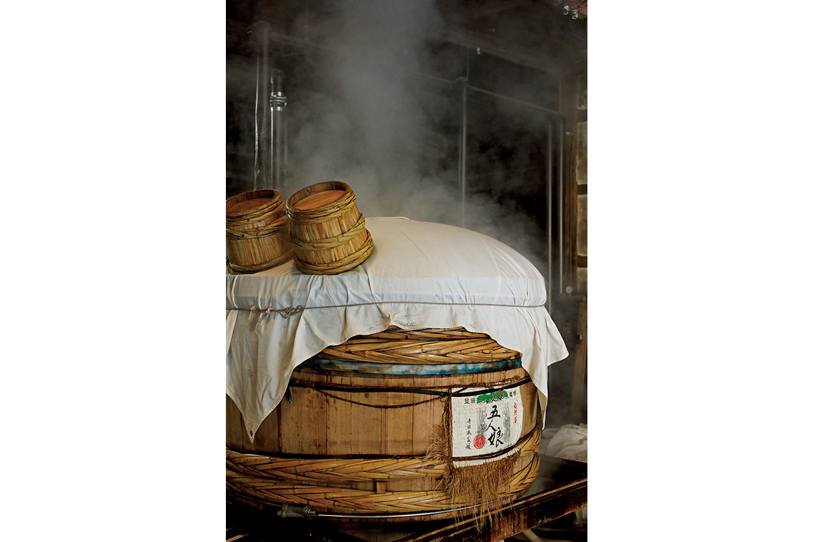
История
Как «место гниения» стало «местом брожения»
Натуральное сакэ здесь начали делать в середине 1980-х годов. Прежний глава сакэварни поначалу ставил на первое место выручку: выпускал дешёвое сакэ, разбавленное спиртом и сахаром, и открывал рестораны. Годы беспорядочной жизни и излишеств закончились тяжёлой болезнью. Чудом выжив, он решил превратить своё «место гниения» в «место брожения».
В 1990-е, когда Японию охватил гастрономический бум, сакэварня стала выращивать рис без пестицидов, и появилось «Гонин-мусумэ», «Пять дочерей», самое известное из её натуральных сакэ. Дальше пошли до конца: рис только без пестицидов и химических удобрений, дрожжи не из лаборатории, а свои, живущие в сакэварне, и собственная закваска кодзи, выведенная из тех же местных грибков. Всё это сохраняется и в 2021 году. Это не мода и не способ поднять цену: так прежний глава хотел делать «сакэ, полезное людям».
«Он говорил: человек часть природы, и человек, и сакэ состоят из микробов. Сакэ, которое забродило само, обязательно будет хорошим для человека. Поэтому делать натуральное сакэ значит помогать людям»
Масару Тэрада о прежнем главе сакэварни
С 2010 года «Тэрада Хонкэ» берёт только рис без пестицидов и химических удобрений. Его выращивают 15 фермеров по договору, которые разделяют этот подход, и сама сакэварня на своих 2 гектарах полей. «Так растить рис очень тяжело, фермерам можно только сказать спасибо», говорит глава.
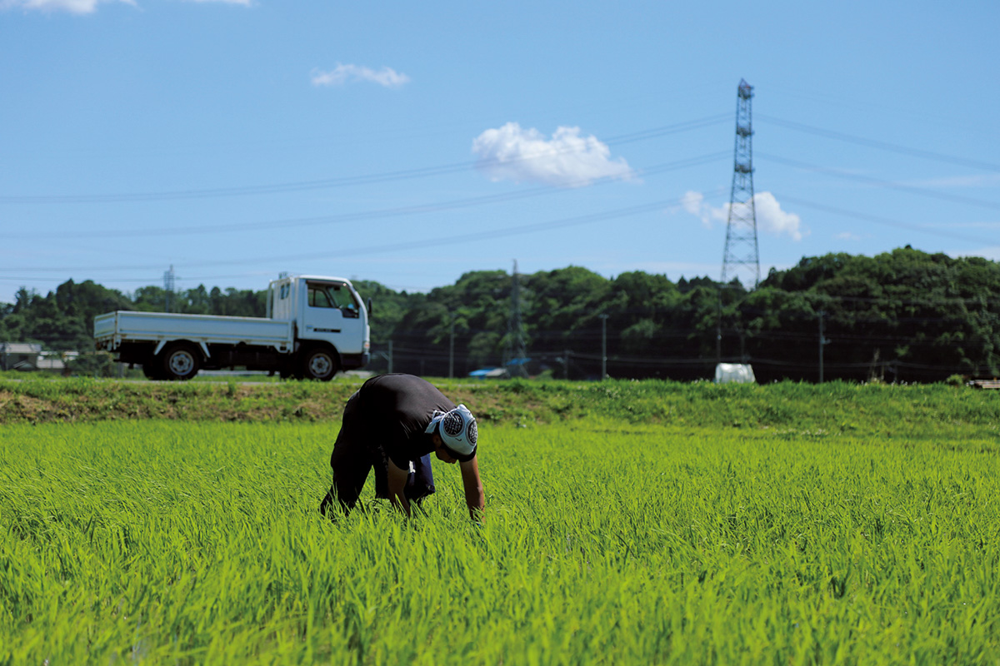
Кодзи делают на собственной закваске, выведенной из грибков, которые живут в сакэварне. Белые халаты в комнате кодзи надевать не обязательно: «Это тоже часть вкуса „Тэрада Хонкэ“», объясняют здесь. В стены комнаты со всех четырёх сторон заложен древесный уголь, чтобы брожению было хорошо.
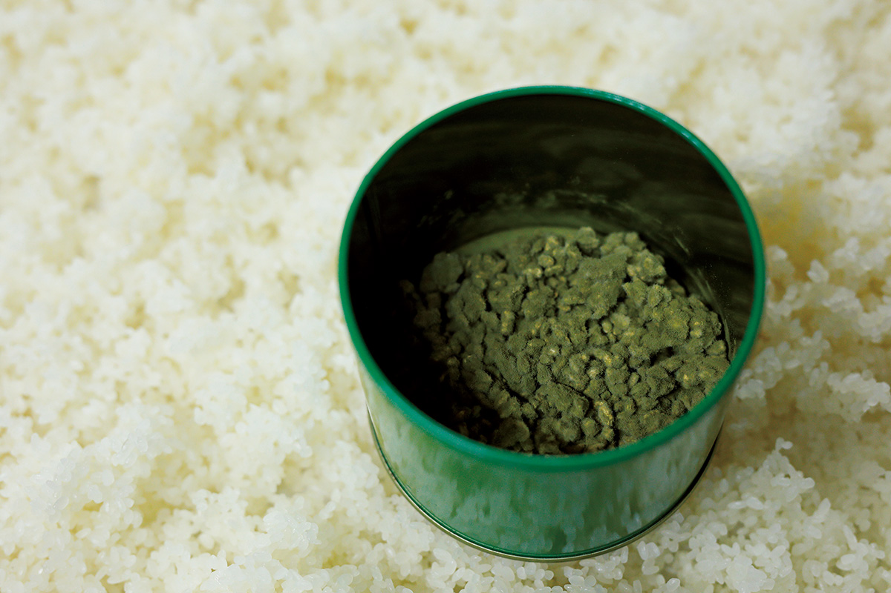
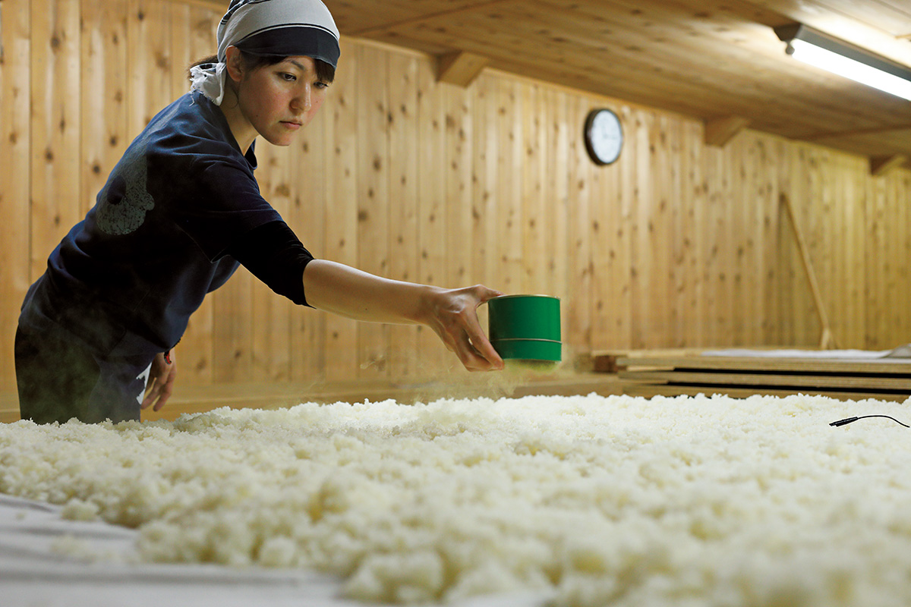
Прежний глава написал книгу-бестселлер «Путь брожения» о том, что, изучая брожение, можно изменить и свою жизнь, и мир вокруг. Его семейные заповеди висят на стене сакэварни.
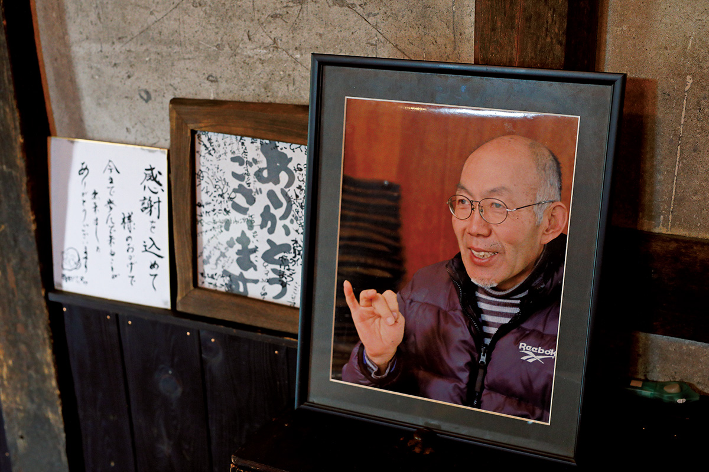
Кроме сакэ, «Тэрада Хонкэ» устраивает местные праздники о брожении, учит детей в соседней начальной школе делать мисо, начиная с выращивания сои, и держит кафе с ферментированной едой. Большой праздник сакэварни с экскурсиями, дегустацией и концертами собирал до 50 000 гостей; в 2021 году его не проводили, и на следующий год тоже не планировали.
«Сакэварня, когда-то дом сельского старосты, в каждую эпоху служит центром округи. Есть сакэварня, и фермеры растят рис, город оживает, складывается хороший круговорот. Вот эту культуру и хочется передать»
Масару Тэрада
Глава
Масару Тэрада: от кинокамеры к рисовому полю
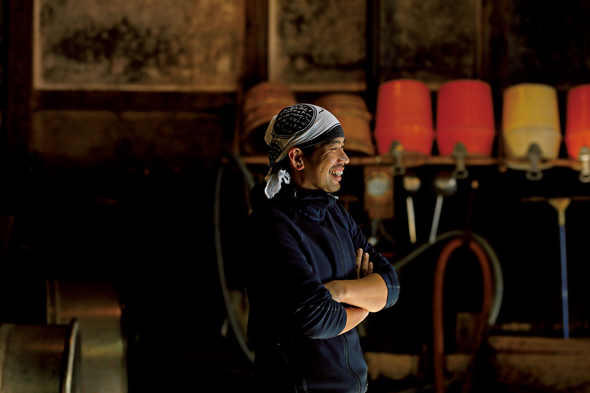
Масару Тэрада родился в 1973 году в префектуре Осака, окончил экономический факультет Национального университета Иокогамы и работал кинооператором. В 2003 году он женился и вошёл в семью Тэрада, в 2012 году стал главой сакэварни, а с 2017 года ещё и тодзи. В студенчестве он почти всё время путешествовал: Австралия, Юго-Восточная Азия, Аляска. Его кумиром был фотограф Митио Хосино (1952–1996), всю жизнь снимавший природу Аляски.
Из путешествий он вынес одно ощущение. На пляже в Перте, где он работал волонтёром, он с рассвета до заката смотрел на море, иногда приплывали дельфины, подходили люди, и он чувствовал себя частью природы Земли. Это умение честно слушать, что тебе хорошо, осталось с ним. Поэтому летнюю работу на рисовом поле он, признаётся со смехом, обожает: почти курорт.
В сакэварню он пришёл через землю. Вернувшись домой после работы оператором, он заинтересовался сельским хозяйством, и будущая жена сказала: «А у нас рис выращивают». Пить много сакэ он не может, и сначала его притянуло другое: необычная, ломающая все шаблоны личность прежнего главы.
«Году в 2002-м он сказал: дальше главной темой времени станет связь с невидимыми микробами, и натуральное сакэ может в этом помочь, это работа, которая радует богов. Я тогда подумал: о чём он вообще?»
Масару Тэрада
Бум брожения, который пришёл в Японию к 2021 году, прежний глава предсказал лет за двадцать. По словам Масару, он видел в людях и хорошее, и плохое, но всегда освещал хорошее. С микробами то же самое: с одной стороны это брожение, с другой гниение, а в целом одно и то же явление. Важно растить хорошую сторону, брожение.
На этом и стоит идея «сакэ, полезного людям». Конечно, хочется, чтобы от него становились здоровее. Но сакэ пьют в весёлой компании и в приятном месте, и если в такой момент человек заметит, как хороша природа, или вспомнит, что он на самом деле любит и чем хочет заниматься, лучшего сакэ и не придумать.
Натуральное сакэ «Тэрада Хонкэ» получается кислым и немного землистым, и это её стиль. Масару мечтает о сакэ, в котором будет ещё и благородство, но добиться его хочет не простым ароматом, а балансом вкуса. Молодым пивоварам он не читает лекций о философии: пусть она останется фоном, главное радость работы. Он и сам, когда на четвёртый день после молочнокислого брожения и добавления воды начинают подниматься дрожжи, думает: «Пошло, пошло!» А сильнее всего мотивируют слова тех, кто выпил его сакэ: «было вкусно», «стало легче».
Сакэ
Три бутылки натурального сакэ
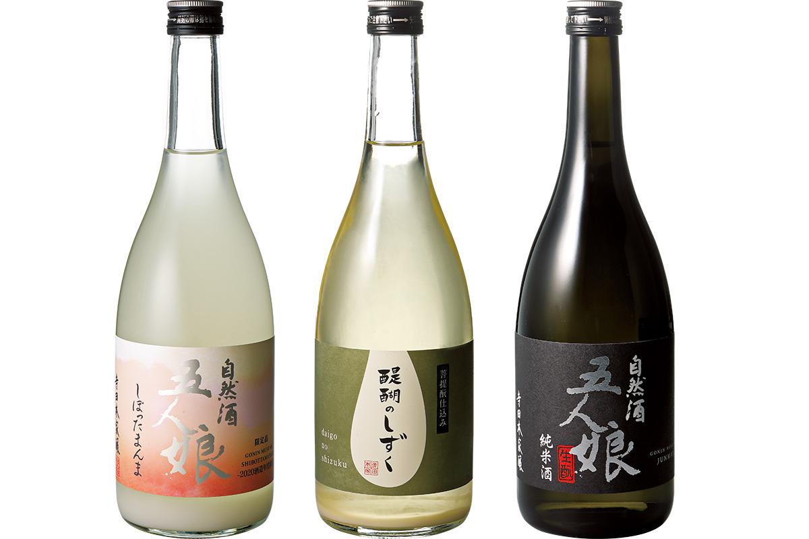
«Гонин-мусумэ дзюммай» стало первым натуральным сакэ сакэварни: насыщенный, плотный вкус и мягкий аромат. Рис мияманисики и юкигэсё, после шлифовки остаётся 70% зерна, 15 градусов. В 2021 году бутылка 720 мл стоила 1457 иен.
«Дайго-но сидзуку» заквашено методом бодаймото, от которого произошёл кимото: это сакэ из самых истоков японского пивоварения. В 2021 году его подавали в копенгагенском ресторане noma, который называют лучшим в мире. Рис косихикари и другие, его почти не шлифуют: остаётся 90–93% зерна, кислотность от 5 до 12, крепость от 6 до 17 градусов. В 2021 году 720 мл стоили 1595 иен.
«Гонин-мусумэ Сиботта-мамма» продают только зимой. Яркий аромат браги, которым сакэварня пахнет лишь в сезон зимнего пивоварения, и свежая сладость доступны только в это время. Рис тибанисики, 17 градусов, 1760 иен за 720 мл в 2021 году.
Визит
Магазин при сакэварне и кафе
Сакэварня стоит в Кодзаки, тихом городке у реки Тонэ, самом маленьком по населению муниципалитете префектуры Тиба (по данным 2021 года). За год здесь делают около 144 000 литров сакэ, примерно 80 000 больших бутылок иссё-бин. При сакэварне есть небольшой магазин.
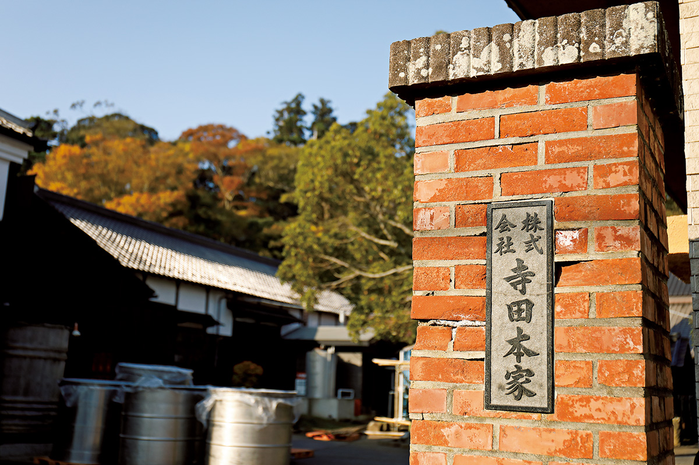
«Тэрада Хонкэ»
- Адрес
- префектура Тиба, уезд Катори, Кодзаки, Кодзаки-Хондзюку, 1964
- Телефон
- +81 478-72-2221
- Часы работы
- 8:00–12:00, 13:00–17:00
- Выходные
- суббота, воскресенье
Рядом с сакэварней работают «Хакко-кураси кэнкюдзё», «Лаборатория ферментированной жизни», и кафе «Уфуфу». Здесь готовит жена Масару, исследовательница кухни на сакэ-касу, выжимках сакэ.
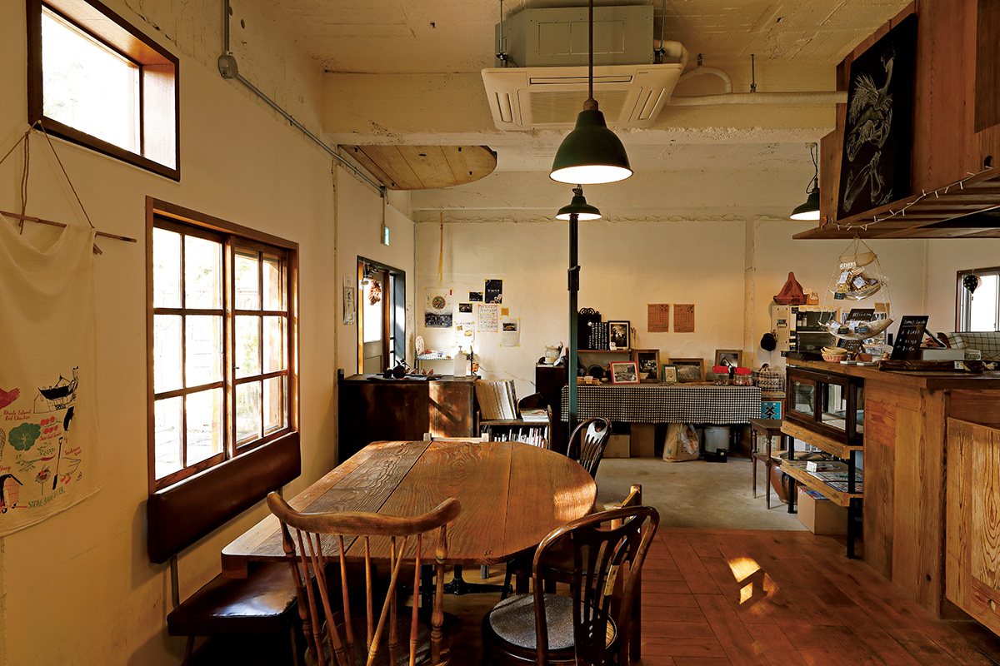
«Хакко-кураси кэнкюдзё» и кафе «Уфуфу»
- Адрес
- префектура Тиба, уезд Катори, Кодзаки, Кодзаки-Хондзюку, 1968-2
- Телефон
- +81 478-79-8284 (только в дни работы)
- Часы работы
- 11:00–15:00 (обед, пока не закончится)
- Выходные
- работает нерегулярно, в основном по четвергам и пятницам; дни на сайте
Фото: Норихито Судзуки.